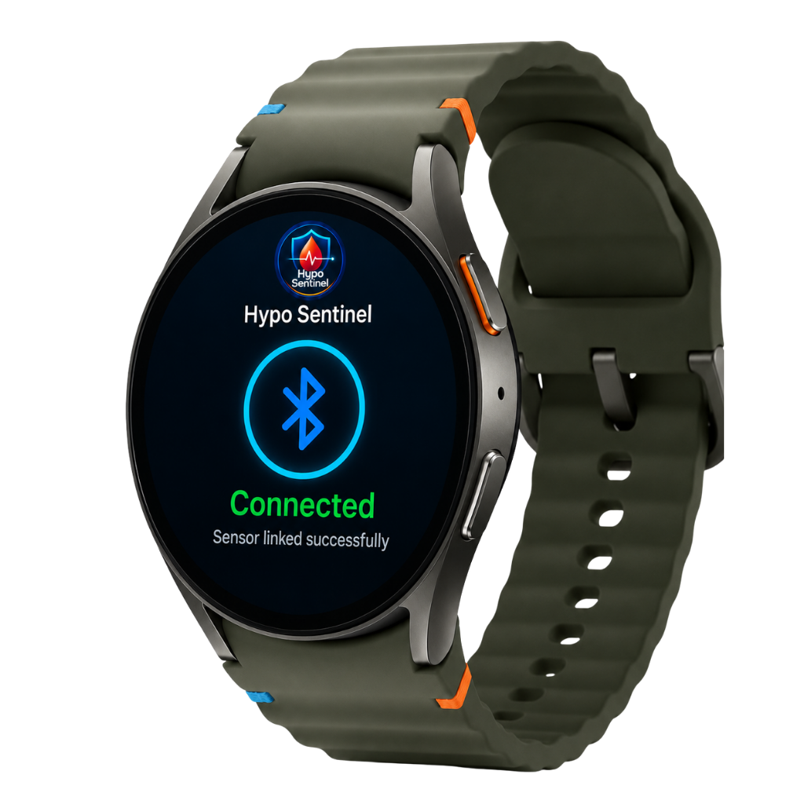

Smartwatch-Based Early Warning System for Hypoglycemia Risk
Smartwatch Link
Galaxy Watch 7
System Pipeline Status
Pipeline Activeระบบเฝ้าระวังความเสี่ยงภาวะน้ำตาลต่ำ
Current Hypoglycemia Risk State
Confidence: Medium-High
การประเมินแนวโน้มความเสี่ยง:
แนวโน้มความเสี่ยงเพิ่มขึ้น
ระบบพบรูปแบบการเปลี่ยนแปลงของสัญญาณชีพร่วมกัน เช่น อัตราการเต้นหัวใจสูงกว่าค่าฐาน ความแปรปรวนของหัวใจลดลง และมีการเคลื่อนไหวน้อยในช่วงพัก จึงประเมินว่าแนวโน้มความเสี่ยงเพิ่มขึ้น และแนะนำให้ตรวจยืนยันด้วย CGM หรือเครื่องตรวจน้ำตาลมาตรฐาน
สัญญาณชีพเรียลไทม์จากนาฬิกา (Physiological Signal Stream)
เปรียบเทียบกับ baseline ส่วนบุคคลแนวโน้มย้อนหลัง 30 นาที (30-Minute Risk Score Trend)
ทำไมระบบถึงแจ้งเตือน? (Why this alert?)
- 1. HR above personal baseline +0.24
- 2. HRV decreased from baseline +0.21
- 3. Low movement during night +0.14
- 4. Risk trend rising +0.08
ข้อจำกัดความปลอดภัยของระบบ (Safety & Medical Disclaimer)
ภาษาไทย: HypoSentinel เป็นระบบช่วยเฝ้าระวังความเสี่ยง ไม่ใช่เครื่องวัดน้ำตาลหรือเครื่องมือวินิจฉัยทางการแพทย์ ไม่ระบุระดับน้ำตาลในเลือด และไม่มีการแนะนำโดสอินซูลินใดๆ กรุณาตรวจยืนยันด้วย CGM หรือเครื่องตรวจน้ำตาลมาตรฐานก่อนตัดสินใจทางการแพทย์
English: Risk estimate only. Not a glucose meter. Not for diagnosis or treatment decisions. Please verify all alerts with CGM or a standard blood glucose meter before making any medical decisions.
การเปรียบเทียบและวิเคราะห์แนวโน้มสัญญาณชีพ
Physiological Time-Series Analysis & Baseline Calibration
กราฟอนุกรมเวลาเปรียบเทียบสัญญาณชีพร่วม (Normalized Risk Analysis)
เส้นกราฟเปรียบเทียบการเปลี่ยนแปลงของ Heart Rate, HRV, Skin Temp, Movement และคะแนนความเสี่ยงโดยภาพรวม
ตารางวิเคราะห์ความต่างค่าปัจจุบันและค่าฐานเฉลี่ย (Baseline Comparison Table)
| สัญญาณชีพ (Signal) | ค่าปัจจุบัน (Current) | ค่าอ้างอิงเฉลี่ย (Baseline) | ค่าเบี่ยงเบน (Change) | การตีความผล (Interpretation) |
|---|
บทวิเคราะห์แนวโน้มปัจจุบัน (Trend Analysis)
ระบบตรวจพบพฤติกรรมการเพิ่มขึ้นของอัตราการเต้นหัวใจสวนทางกับการลดลงอย่างรวดเร็วของความแปรปรวน (HRV Proxy) ขณะที่ผู้ใช้งานไม่มีประวัติการเคลื่อนไหวร่างกาย แสดงถึงการตอบสนองแบบกระตุ้นประสาทซิมพาเทติกเฉียบพลันในขณะพัก ซึ่งเป็นลักษณะจำเพาะสูงสุดของภาวะเสี่ยงน้ำตาลต่ำ
กลไกประมวลผลความเสี่ยง (Risk Engine Workflow)
การแปรรูปสัญญาณชีพและการจำแนกความเสี่ยงแบบเรียลไทม์
สถาปัตยกรรมตัวแปลงข้อมูล (Smartwatch Data Pipeline)
Smartwatch Sensors
PPG, Accelerometer, Thermistor
Feature Extraction
15-Minute Rolling Window Calculation
Personal Baseline
Comparing Current vs User averages
Random Forest Model
Evaluating Multi-dimensional Signatures
ข้อมูลคุณลักษณะการวิเคราะห์ (Window Feature Extractions)
รายการฟีเจอร์สำคัญที่โมเดล AI นำไปประเมินทุกๆ 5 นาที:
สูตรประเมินเชิงคณิตศาสตร์แบบแนวคิด (Risk Formula Concept)
โมเดลประมวลผลผ่านสมการการถดถอยแบบป่าสุ่ม (Random Forest Decision Tree Regression) เพื่อหาความน่าจะเป็นความล้มเหลวในการปรับสมดุลน้ำตาล โดยประมวลผลร่วมกับตัวกรองสภาวะมาร์คอฟเพื่อรักษาความสม่ำเสมอของผลแจ้งเตือนและลดอัตราการแจ้งเตือนผิดพลาด (False Alarm Suppression)
โมเดลการเปลี่ยนผ่านสถานะมาร์คอฟ (Markov Risk State Transition)
การพยากรณ์ความน่าจะเป็นที่จะก้าวเข้าสู่ภาวะความเสี่ยงถัดไป
แผนภูมิความน่าจะเป็นของสถานะความเสี่ยง (Risk State Transition Diagram)
Normal (ปกติ)
0.18
Probability
Watch (เฝ้าระวัง)
0.26
Probability
Warning (เตือนภัย)
0.38
Probability
High Risk (เสี่ยงสูง)
0.18
Probability
ตารางความน่าจะเป็นแบบมีเงื่อนไข (Transition Probability Matrix)
| สถานะปัจจุบัน \ ถัดไป | ปกติ (Normal) | เฝ้าระวัง (Watch) | เตือนภัย (Warning) | เสี่ยงสูง (High Risk) |
|---|---|---|---|---|
| Normal | 0.62 | 0.24 | 0.10 | 0.04 |
| Watch | 0.28 | 0.40 | 0.24 | 0.08 |
| Warning | 0.18 | 0.26 | 0.38 | 0.18 |
| High Risk | 0.06 | 0.14 | 0.30 | 0.50 |
นวัตกรรมการวิเคราะห์แบบมาร์คอฟ
แทนที่จะพิจารณาจุดสัญญาณชีพเดี่ยวๆ ที่อาจแกว่งตัวจากปัจจัยแวดล้อมชั่วขณะ ระบบประยุกต์ใช้ความหนาแน่นมาร์คอฟ (Markov Transition Density) เพื่อประเมินพลศาสตร์และการเดินทางของสัญญาณชีพในพฤติกรรมระยะยาว ซึ่งช่วยให้ระบบสามารถคาดการณ์ความเสี่ยงล่วงหน้าได้สูงสุด 15-30 นาทีก่อนจะเกิดอาการทางกายภาพจริง
เหตุผลและสถิติการแจ้งเตือน (Explainable AI Panel)
แสดงการมีส่วนร่วมของปัจจัยตรวจจับต่อคะแนนความเสี่ยง (Shapley Value / Feature Contribution)
คะแนนสัดส่วนการผลักดันความเสี่ยง (Feature Risk Contribution Index)
คำอธิบายสำหรับผู้ใช้ (Human-Friendly Interpretation)
ภาษาไทย:
ระบบเพิ่มสถานะเป็น “เตือน” เนื่องจากพบการเปลี่ยนแปลงของสัญญาณชีพร่วมกัน ได้แก่ อัตราการเต้นหัวใจ (HR) สูงกว่าค่าพื้นฐาน, ความแปรปรวนของหัวใจ (HRV) ลดลงมาก, อุณหภูมิร่างกายลดต่ำลง และผู้ใช้ไม่มีการขยับร่างกายในช่วงเวลานอนหลับ
English Analysis:
The system raised the risk state to Warning because several physiological signals changed together: heart rate increased above the user's baseline, HRV proxy decreased, skin temperature dropped, and the user remained still during nighttime rest context.
ข้อปฏิบัติที่แนะนำ (Action Protocol)
1. สังเกตอาการทางกายภาพ
สังเกตอาการเหงื่อออก, ใจสั่น, สั่นสะท้าน, หรือรู้สึกมึนงง
2. เจาะเลือดวัดยืนยัน
ตรวจวัดระดับน้ำตาลทันทีด้วย CGM หรือเครื่องเจาะวัดแบบมาตรฐาน
3. แจ้งผู้ดูแลใกล้ชิด
ในกรณีค่าน้ำตาลลดต่ำกว่า 70 mg/dL โปรดแจ้งผู้ดูแลทันที
4. ปฏิบัติตามคำแนะนำแพทย์
ปฏิบัติตามแผนการบริโภคคาร์โบไฮเดรตที่เหมาะสมเมื่อยืนยันสภาวะน้ำตาลต่ำ
ประวัติการแจ้งเตือน (Alert History Log)
บันทึกเหตุการณ์ความเสี่ยงย้อนหลังในระบบ
| เวลาที่บันทึก (Time) | ระดับความเสี่ยง (State) | คะแนนเสี่ยง (Score) | สาเหตุหลัก (Main Reason) | การยืนยันผู้ใช้ (User Action) | การดำเนินการ |
|---|
ข้อมูลคุณภาพสัญญาณและสุขภาพอุปกรณ์
Samsung Galaxy Watch 7 Diagnostics & Wear OS Stream Quality
ข้อมูลจำเพาะอุปกรณ์ (Device Spec)
คุณภาพของข้อมูลแต่ละเซ็นเซอร์ (Sensor Data Completeness)
บันทึกระบบวิเคราะห์ (Sync & Diagnostic Log Console)
ข้อมูลส่วนบุคคลและการปรับแต่งค่าพื้นฐาน
Personalized Baseline Calibration & Settings
ค่าฐานสัญญาณชีพอ้างอิงส่วนบุคคล (Calibrated User Baseline)
สถานะการปรับเทียบ (Calibration Status)
* การตั้งค่าอ้างอิงที่เหมาะสมช่วยเพิ่มความแม่นยำในการวิเคราะห์สัญญาณชีพแบบจำเพาะส่วนบุคคล โมเดลจะทำงานได้เต็มประสิทธิภาพหลังจากเก็บข้อมูลต่อเนื่องครบ 7 คืน